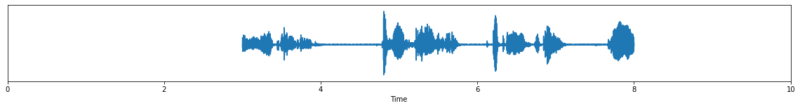
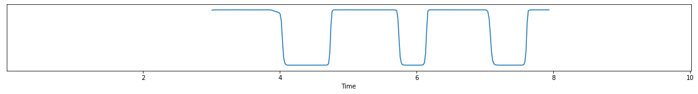
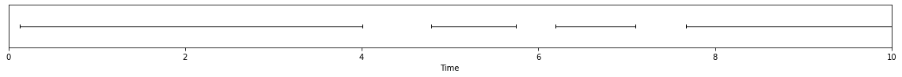

# setting up for pretty visualization%matplotlib inlineimport matplotlib.pyplot as pltfrom pyannote.core import notebook, Segment, SlidingWindowfrom pyannote.core import SlidingWindowFeature as SWFnotebook.crop = Segment(0, 10)def visualize(features): figsize = plt.rcParams["figure.figsize"] plt.rcParams["figure.figsize"] = (notebook.width, 2) notebook.plot_feature(features)
Rolling audio buffer
Let us assume that the audio stream is given as a 5s rolling buffer.
Here, we are going to fake it by sliding a 5s window over the duration of an audio file.
from pyannote.audio.core.io import Audio, AudioFileclass RollingAudioBuffer(Audio):"""Rolling audio buffer Parameters ---------- sample_rate : int Sample rate duration : float, optional Duration of rolling buffer. Defaults to 5s. step : float, optional Delay between two updates of the rolling buffer. Defaults to 1s. Usage ----- >>> buffer = RollingAudioBuffer()("audio.wav") >>> current_buffer = next(buffer) """def__init__(self, sample_rate=16000, duration=5.0, step=1.):super().__init__(sample_rate=sample_rate, mono=True)self.duration = durationself.step = stepdef__call__(self, file: AudioFile):# duration of the whole audio file duration =self.get_duration(file)# slide a 5s window from the beginning to the end of the file window = SlidingWindow(start=0., duration=self.duration, step=self.step, end=duration)for chunk in window:# for each position of the window, yield the corresponding audio buffer# as a SlidingWindowFeature instance waveform, sample_rate =self.crop(file, chunk, duration=self.duration) resolution = SlidingWindow(start=chunk.start, duration=1./self.sample_rate, step=1./sample_rate)yield SWF(waveform.T, resolution)
We start by initializing rolling buffer on a sample file:
import torchimport numpy as npfrom pyannote.audio import Modelclass VoiceActivityDetection:def__init__(self):self.model = Model.from_pretrained("pyannote/segmentation")self.model.eval()def__call__(self, current_buffer: SWF) -> SWF:# we start by applying the model on the current bufferwith torch.no_grad(): waveform = current_buffer.data.T segmentation =self.model(waveform[np.newaxis]).numpy()[0]# temporal resolution of the output of the model resolution =self.model.introspection.frames# temporal shift to keep track of current buffer start time resolution = SlidingWindow(start=current_buffer.sliding_window.start, duration=resolution.duration, step=resolution.step)# pyannote/segmentation pretrained model actually does more than just voice activity detection# see https://huggingface.co/pyannote/segmentation for more details. speech_probability = np.max(segmentation, axis=-1, keepdims=True)return SWF(speech_probability, resolution)
vad = VoiceActivityDetection()
Let us try this thing on current buffer:
current_buffer =next(buffer)current_buffer

vad(current_buffer)

reference

Building a basic streaming pipeline with streamz
We now have a way to stream audio and apply voice activity detection.
According to its documentation, streamz seems like a good option to do that:
Streamz helps you build pipelines to manage continuous streams of data.
Let us start by creating a Stream that will ingest the rolling buffer and apply voice activity detection anytime the buffer is updated.
from streamz import Streamsource = Stream()source.map(vad).sink(visualize)
We re-initialize the audio buffer from the start of the file and push the rolling buffer into the pipeline:
This is nice but we can do better in case the pipeline is allowed a small delay (a.k.a. latency) between when it receives the audio and when it outputs the voice activity detection scores.
For instance, if we are allowed 2s latency, we could benefit from the multiple overlapping buffers and combine them to get a better estimate of the speech probability in regions where the model is not quite confident (e.g. just before t=4s).
This is what the Aggregation class does.
from typing import Tuple, Listclass Aggregation:"""Aggregate multiple overlapping buffers with a Parameters ---------- latency : float, optional Allowed latency, in seconds. Defaults to 0. """def__init__(self, latency=0.0):self.latency = latencydef__call__(self, internal_state, current_buffer: SWF) -> Tuple[Tuple[float, List[SWF]], SWF]:"""Ingest new buffer and return aggregated output with delay Parameters ---------- internal_state : (internal_time, past_buffers) tuple `internal_time` is a float such that previous call emitted aggregated scores up to time `delayed_time`. `past_buffers` is a rolling list of past buffers that we are going to aggregate. current_buffer : SlidingWindowFeature New incoming score buffer. """if internal_state isNone: internal_state = (0.0, list())# previous call led to the emission of aggregated scores up to time `delayed_time`# `past_buffers` is a rolling list of past buffers that we are going to aggregate delayed_time, past_buffers = internal_state# real time is the current end time of the audio buffer# (here, estimated from the end time of the VAD buffer) real_time = current_buffer.extent.end# because we are only allowed `self.latency` seconds of latency, this call should# return aggregated scores for [delayed_time, real_time - latency] time range. required = Segment(delayed_time, real_time -self.latency)# to compute more robust scores, we will combine all buffers that have a non-empty# temporal intersection with required time range. we can get rid of the others as they# will no longer be needed as they are too far away in the past. past_buffers = [bufferforbufferin past_buffers ifbuffer.extent.end > required.start] + [current_buffer]# we aggregate all past buffers (but only on the 'required' region of interest) intersection = np.stack([buffer.crop(required, fixed=required.duration) forbufferin past_buffers]) aggregation = np.mean(intersection, axis=0)# ... and wrap it into a self-contained SlidingWindowFeature (SWF) instance resolution = current_buffer.sliding_window resolution = SlidingWindow(start=required.start, duration=resolution.duration, step=resolution.step) output = SWF(aggregation, resolution)# we update the internal state delayed_time = real_time -self.latency internal_state = (delayed_time, past_buffers)# ... and return the whole thing for next call to know where we arereturn internal_state, output
Let’s add this new accumulator into the streaming pipeline, with a 2s latency:
I also offer scientific consulting services around speaker diarization (and speech processing in general), please contact me if you think this type of technology might help your business/startup!
Bonus: concatenating output
For visualization purposes, you might want to add an accumulator to the pipeline that takes care of concatenating the output of each step…